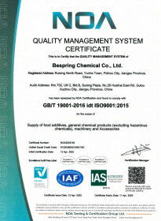
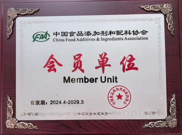
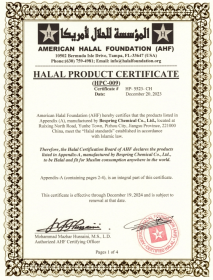
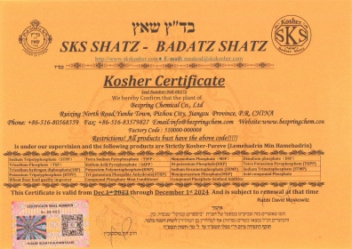

正确的法律实体
确认文件所涵盖的操作或活动。
透明的文件支持买家评估质量体系、产品适用性和目的地市场的要求。
我们的文件方法
百泉化工提供质量体系、行业会员和产品相关合规文件，以支持买方资格。
只有在其法律实体、产品或活动范围、生产或包装地点和有效期与被评估的供应品相符时，证书才是有用的。为此，我们鼓励买家要求提供的确切产品和来源的最新文件。
本页面上的图片显示百泉化工记录中的文件。其当前或存档状态分别列于下文。
确认文件所涵盖的操作或活动。
检查确切的材料和生产或包装来源。
审查批准前的发行、到期和续展信息。
将文件与目的地和客户要求进行比较。
网站图片仅供初步审查。不要将其作为监管、宗教或供应商批准的唯一依据。要求提供最新的、可读的副本，并核实其发行人、范围、地点和有效性。
档案文件
每张卡片都标识了显示的文件所说的内容，以及该文件应被视为当前文件还是存档文件。

质量管理体系
所显示的证书涵盖百泉化工有限公司及文件中所述的销售服务范围。

行业会员
展示的证书标识百泉化工为中国食品添加剂与配料协会会员单位。

宗教合规文件
此图片仅作为历史参考，不得视为当前产品覆盖范围的证据。

宗教合规文件
此图片仅作为历史参考，不得视为当前产品覆盖范围的证据。
产品文件
可用文件取决于产品、等级、生产来源和目的地。询问与您的资格认证流程相关的项目。
用于初步评估的产品身份、参考参数、应用和技术信息。
适用于所提供材料的处理、储存、危险和工作场所控制信息。
具有代表性或针对特定批次的测试结果，以便与共同商定的规格进行比较。
适用于所供应产品及生产场所的现行质量、食品安全或宗教合规文件（如可提供）。
采购核查清单
严格的审查可防止看起来有效的文件被应用于错误的公司、产品、站点或货物。
法定公司名称是否与正在批准的供应商或生产商相符？
所述活动或产品范围是否涵盖您打算购买的材料？
是否在必要时包括相关的生产或包装地点？
发放、过期、续展和暂停详情是否最新？
文件和认证机构是否可以独立核实？
采购常见问题
为质量、监管和采购团队审查百泉化工提供直接答案。
请按证书编号、签发机构、适用范围和有效期核对最新签章文件。网站保留的历史证书图片不能代替当前有效证明；所示协会会员文件载明有效期至 2029 年 3 月。
不是。证书范围可能取决于法人、产品、生产或包装地点和有效期。核实所提供的确切供应。
不是。显示的清真和犹太教图片是存档参考资料，有效日期到2024年。在认证前请索取当前的产品和生产场所对应的文件。
根据所提供的产品，买方可以要求最新规格、技术数据表（TDS）、安全数据表（SDS）、代表性或批次分析证书（COA）以及适用的质量、食品安全或宗教合规文件。